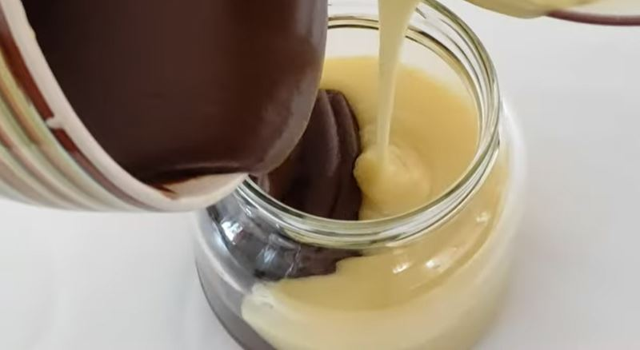

EuroKrem

EuroKrem (Chocolate/Vanilla spread)
Vanilla or chocolate spread
Ingredients:
- 150 ml - milk or water
- 200 g - butter
- 200 g - 300 g - sugar
- 25 g - vanilla sugar
- 200 g - powdered milk
- 100 g - chocolate
Steps:
- Bring the milk (or water) to a boil then add the sugar and vanilla sugar.
Then add the butter and cook for 10 minutes.
- Take it of the heat and gradually add the powdered milk while mixing (with a mixer)
until an even texture is achieved.
- Split the mixture into 2 parts, 1 of which you can add hazelnut extract or ground hazelnuts to this
mixture.
Add the chocolate to the other half and mix until it is melted
(you can expermiment with other flavours).
- Poor the mixtures into separate jars (or into the same jar) and allow to cool.
Serve with fresh bread or toast.
Keep it in the fridge.
ENJOY!
Back